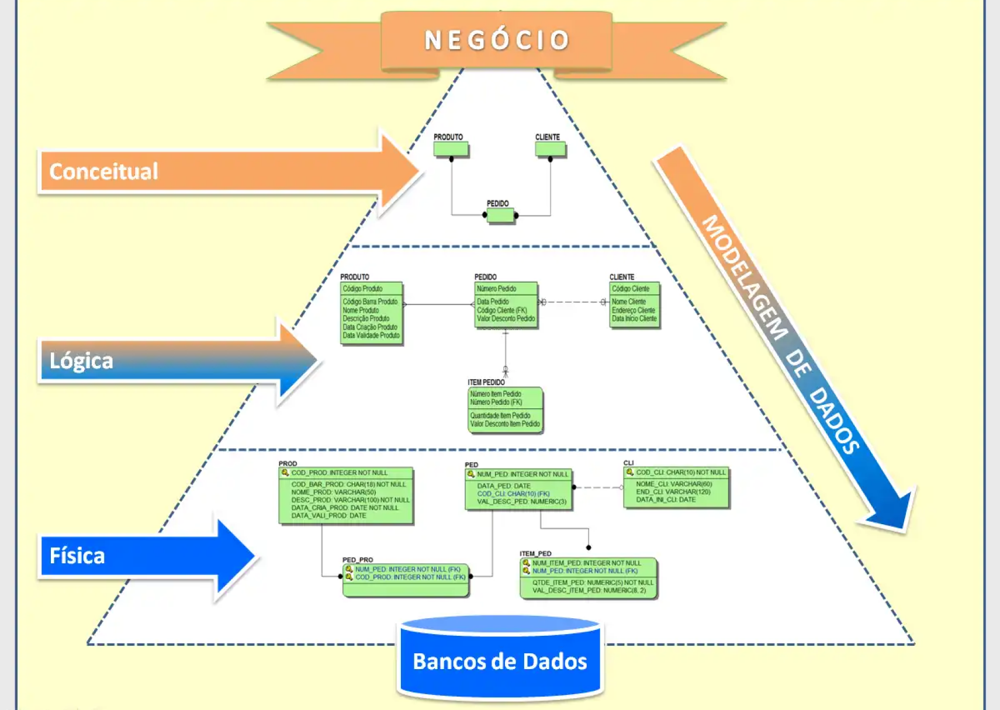
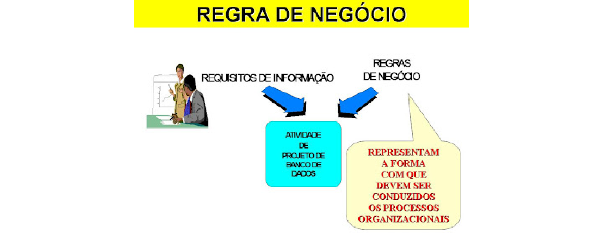

- While data is crucial, it is the context that gives it meaning and relevance, transforming it into useful information for analysis, decision-making, and knowledge creation.
Database
Professor: Cainã


Types of Data

What I learned:
Relational Database

Cardinality
1:1
- An employee belongs to at least 1 department and at most 1 department.
- A department can have at least 1 employee and at most n employees.
1:N
- A department can have at least 1 employee and at most n employees.
Logical Model
The logical model is crucial for ensuring data is organized coherently and efficiently, facilitating manipulation, querying, and maintenance of information within a database.
Definition:
- Represents the logical structure and organization of data in a database.
- Describes how data is stored and related to each other without concern for physical implementation details.
Primary Key and Constraints:
- Primary Key: Attribute or set of attributes that uniquely identifies each record in a table.
- Integrity Constraints: Rules that ensure data accuracy and consistency, such as foreign key constraints and unique value constraints.
Physical Model
Creation of the table
- Patient: name, CPF, age
- Doctor: name, CRM, specialty
Business rule
Definition:
- A patient can have at least 1 doctor and at most n doctors.
- A doctor can have at least 1 patient and at most n patients.

Database Administration
Comandos DDL - Data Definition Language
- CREATE TABLE
- ALTER TABLE
- DROP TABLE
Comandos DML - Data Manipulation Language
- INSERT
- UPDATE
- DELETE
- SELECT
Comandos DQL - Data Query Language
- SELECT
- OPERADORES SQL
- FUNÇÕES SQL
- ORDER BY
- JOIN
- GROUP BY
- UNION, INTERSECT and EXCEPT
- ALIASES (Apelidos para tabelas ou colunas)
Comandos DTL - Data Trasaction Language
Linguagem de Transação de Dados.
São os comandos para controle de transação.
- São comandos DTL : BEGIN TRANSACTION, COMMIT E ROLLBACK
Example of a relational database:
- PostgreSQL
NoSQL Database
Flexibility in data model:
- Allows storing unstructured, semi-structured, and structured data without the need for a fixed schema.
Horizontal scalability:
- Designed to handle large volumes of data distributed across multiple servers.
Types of NoSQL databases:
- Document: MongoDB, Couchbase.
- Key-value: Redis, Amazon DynamoDB.
- Column: Apache Cassandra, HBase.
- Graph: Neo4j, Amazon Neptune.
Flexibility and performance:
- Efficient for handling large volumes of unstructured and semi-structured data.
Flexibility in data model:
- Allows storing unstructured, semi-structured, and structured data without the need for a fixed schema.
- UPDATE
- DELETE
- SELECT
Usage across various industries:
- Widely used in technology, finance, media, healthcare, among others.
Complementary to relational databases:
- Provide solutions for specific data storage and retrieval problems in modern software development environments.
Example of a non-relational database:
- MongoDB